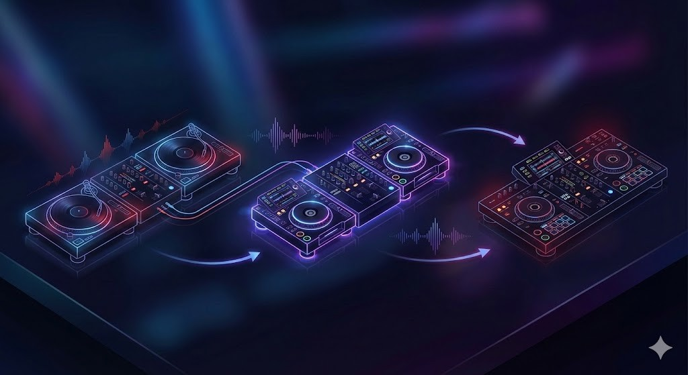
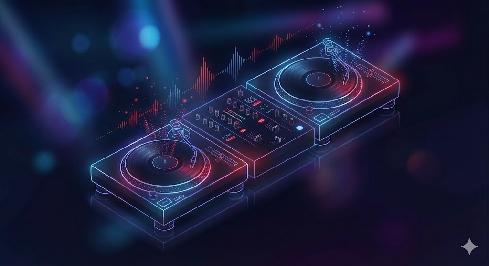
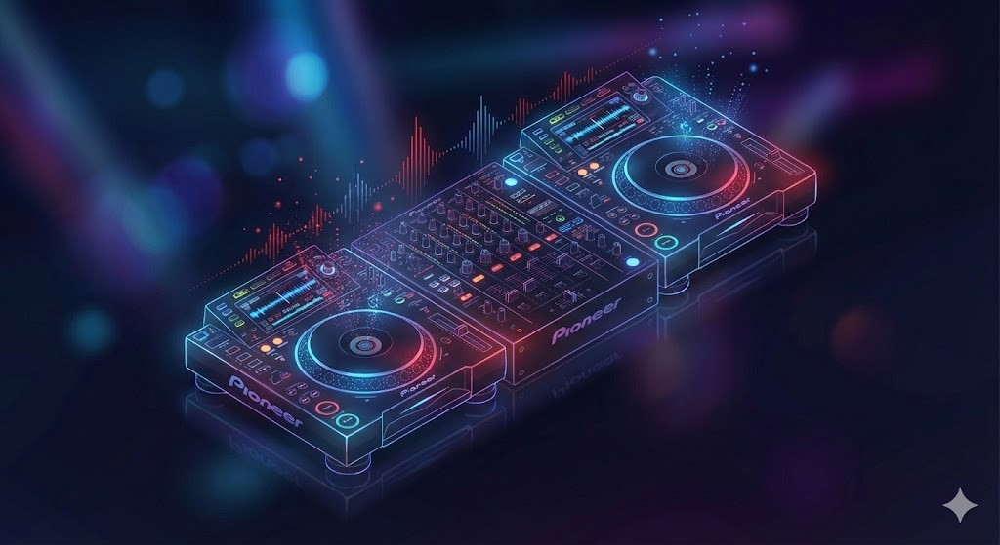
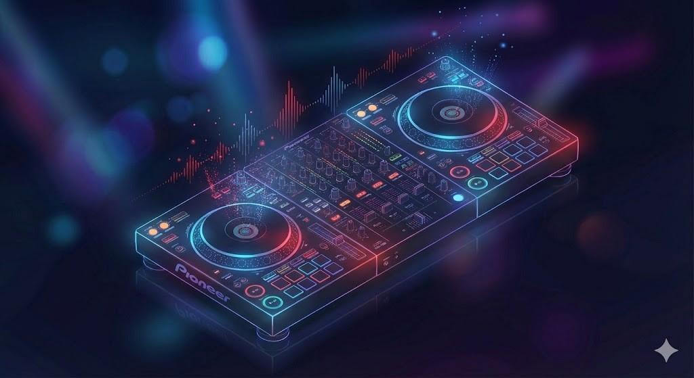
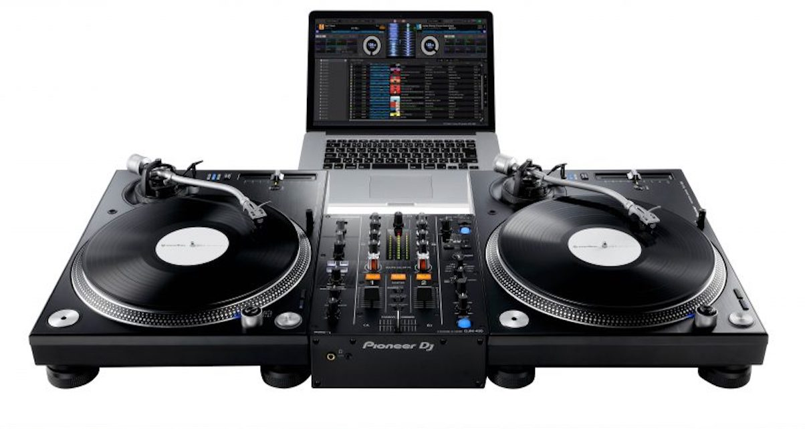
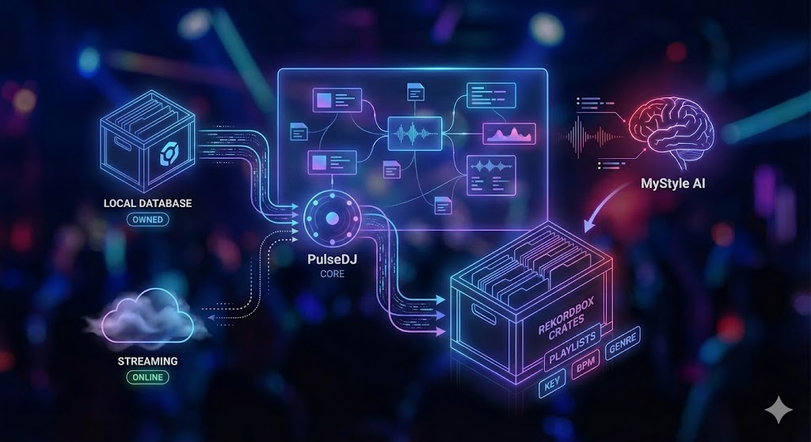
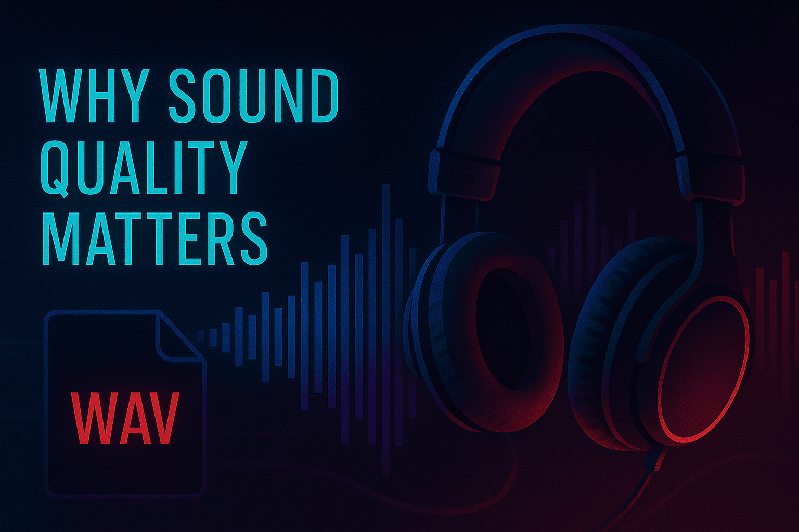

If you have ever looked up at the booth during a crowded party and wondered exactly what is going on behind the decks, you aren't alone. These days, DJs have countless different tools and setups to use, which can be a bit confusing for a beginner DJ. In this guide, I'm going to share the most common gear and software used by DJs today!
What You’ll Learn About DJ Gear and Software
- The essential hardware differences between vinyl turntables, CDJs, and controllers.
- How modern DJs manage digital libraries and prepare their sets for live performance.
- The role of mixers, headphones, and sound systems in creating a seamless audio experience.
- How PulseDJ acts as an intelligent co-pilot to help you pick the perfect next track.
PulseDJ: The Modern DJ's Secret Weapon
While hardware controls the music, track selection controls the crowd. This is where PulseDJ comes in. It is smart DJ co-pilot designed to help professional djs and hobbyists alike make better decisions in the mix.
PulseDJ isn't a replacement for your main software; it is a companion that runs alongside it. Many djs struggle with the pressure of choosing the right song in the heat of the moment, and I use PulseDJ to solve that exact problem: "What should I play next?"
How PulseDJ Enhances the Setup
When I am in the middle of a set, PulseDJ analyzes the tracks I am playing in real time . It looks at the history of millions of parties to understand what works.
- Intelligent Recommendations: It suggests the next track based on key, BPM, and historic usage.
- Harmonic Mixing: The software highlights compatible tracks in green, making it easy to mix in key (e.g., 8A to 5B). This ensures that when I layer two songs , they don't clash musically.
- Hot 100 Charts: If I need to know what is trending globally or in specific genres like Afro-House or Techno, I can access the PulseDJ HOT 100 2.
The beauty of PulseDJ is that it integrates with the dj software I already use. Whether you are on Serato DJ Pro, Rekordbox, Virtual DJ, Traktor, or djay PRO, PulseDJ reads your history file to give you accurate suggestions without interfering with your audio stability. It works the same way regardless of which platform you prefer, reading your data safely in the background.
PulseDJ Integration in Action

Here is how I use PulseDJ:
- I open my main DJ software (e.g., Serato) and start playing.
- I launch PulseDJ, which sits quietly in the background or on a second screen.
- As I mix, PulseDJ reads my history and updates the suggestion list instantly.
- I see a track that fits perfectly. I click it in PulseDJ to copy the name, paste it into my DJ software search bar, and load it up.
It effectively gives me the knowledge of thousands of other djs right in the booth.
Best of all, PulseDJ is completely free! Download PulseDJ now

The Evolution of the DJ Setup

Back in the day (before my time), the landscape of DJ gear looked very different than it does today. Back then, the question of "what do djs use" had a simple answer: two turntables, a mixer, and a microphone. Today, the technology has exploded, offering endless creative possibilities for everyone from underground techno artists to commercial dance music selectors.
To understand the craft, we have to look at the tools of the trade. Whether you are watching celebrity DJs headline festivals or mobile djs rocking a wedding, the core concept remains the same: manipulating recorded music to keep the dance floor moving.
Vinyl Turntables: The Roots of the Culture

For purists and hip hop artists, vinyl turntables are still the gold standard. There is a tactile feel to playing records that digital formats struggle to replicate. When you see experienced djs performing beat juggling or scratching, they are often using high-torque turntables like the legendary Technics SL-1200 series.
Mixing with vinyl requires a keen ear for beat matching - manually adjusting the pitch of two tracks so they play at the same speed. It is a high-wire act; there is no "sync" button. The sound quality of vinyl is often described as warmer, with a booming bass that digital files sometimes lack.
DJ CDJs and Media Players

As we moved into the digital era, disc jockeys began transitioning to CDJs. These dj decks allowed us to play audio files from CDs and eventually USB drives. This became the standard dj setup in clubs because it removed the need to carry heavy crates of vinyl.
Today, most djs in a club environment show up with just a usb stick and dj headphones. They plug into the house gear - usually Pioneer CDJs - and have access to their entire music library instantly.
DJ Controllers: The All-in-One Solution

For bedroom djs and anyone looking to start djing, dj controllers are the most popular entry point. A controller combines the functionality of two songs being played on decks and a dj mixer into a single unit that connects to a laptop. This allows you to control dj software physically.
What is great about modern controllers is that they often pack the same features found on professional club equipment but at a fraction of the cost. You can practice your mixing techniques at home, recording and listening back to create mixes that sound professional, and then take the same unit to a house party.
The DJ Mixer: Command Central
Sitting between the decks is the dj mixer. This is the heart of the operation. Most dj mixers feature vertical faders to control volume, a crossfader to cut between channels, and EQ knobs to shape the frequency (low, mid, high).
The mixer is where the magic happens. When mixing music, we use the EQ to blend the bass of the next song while fading out the bass of the current track. This ensures the main speakers don't get overloaded and the energy on the floor stays consistent.
Connecting all this audio equipment requires a solid understanding of signal flow. The audio goes from the decks, into the mixer, out to the sound system (amplifiers and speakers), and simultaneously to the DJ booth monitors so the performer can hear what they are doing without delay.
Software: The Digital Revolution
The biggest shift in what do djs use over the last decade is the reliance on dj software. Programs like Serato, Rekordbox, Traktor, and VirtualDJ have become industry standards.
Digital Vinyl Systems (DVS)

DVS is a fascinating bridge between old and new. It allows DJs to use traditional turntables to control digital files on their laptop. You put a special control record on the platter, and the software translates the movement of the vinyl into the playback of the digital file. This is a favorite among hip hop DJs who want the feel of vinyl with the convenience of a digital music collection.
The Laptop as an Instrument
Digital djing allows for features that were previously impossible. We can now set cue points to jump to specific parts of a song instantly, loop sections on the fly, and apply effects. It is not just about playing songs sequentially anymore; it's about deconstructing them.
Some music producers take it a step further and perform using a digital audio workstation (DAW) like ableton live. This isn't traditional DJing; it's more like a live performance where they are triggering clips, using drum machines, and remixing their own tracks in real-time. This live mixing approach blurs the line between a dj set and a live concert.
Managing the Music Library

For any good dj, the music library is their most valuable asset. In the past, we hunted for vinyl in dusty basements. Now, we hunt for high-quality audio files on digital stores.
(Check out my full article on managing your music library as a DJ )
Streaming vs. Owning
Recently, streaming services have integrated into DJ software. This allows you to access millions of songs on the fly. However, most djs still prefer to buy and download their music. Relying on an internet connection in a dark club is risky. PulseDJ is great here because once it builds a local database, it works completely offline, which is essential for stability.
Organization is Key
Whether you are using a spotify playlist to scout for new tracks or organizing crates in Rekordbox, preparation is everything. We spend hours analyzing musical key, setting grids for beat matching, and tagging genres. PulseDJ helps here too by learning my specific style over time via the "MyStyle" feature, which analyzes my entire history to personalize recommendations.
Performance Techniques and "Reading the Room"
You can have the best dj equipment in the world, but if you can't read the crowd, the party will fail. Playing music is about psychology.
Building a DJ Set
A dj mix is a journey. You might start with a lower energy first song to welcome people to the dance floor, and slowly build up. Club djs know exactly when to drop a hit and when to pull back.
We watch for dance moves. Are people bobbing their heads? Are they leaving for the bar? If the energy dips, I might use PulseDJ to find a track that bridges the gap between the current vibe and where I want to go.
Read my article on How To Plan A DJ Set for more information!
Learning the DJ Craft
If you are new to this, the best way to learn is to watch videos of your favorite DJs performing. Observe how they touch the EQs, when they bring in the next fader, and how they manage the crowd. Then, try to replicate those transitions on your own setup.
Live Remixing and Mashups
With modern recording gear and software, we can do more than just play one song after another. We can loop a vocal, add an echo effect, and layer it over a drum beat from a different track. Some DJs use beat juggling to create entirely new rhythms live.
Comparison of Common DJ Setups
To help you visualize all the details, here is a breakdown of what different types of DJs typically use.
DJ Type
Primary Gear
Software/Media
Key Features
Club / Festival DJ
CDJs (e.g., CDJ-3000) + DJM Mixer
USB Sticks (Export Mode)
Reliability, industry standard, no laptop required on stage.
Open Format / Wedding DJ
DJ Controller or DVS
Serato / VirtualDJ + Laptop
Versatility, huge music library access, mobile setup.
Scratch / Hip Hop DJ
Turntables + Battle Mixer
Serato DVS + Control Vinyl
Tactile control, optimized for scratching and cutting.
Live Performer
MIDI Controllers + Synthesizers
Ableton Live
Creating music live, loops, samples, hybrid performance.
Beginner / Hobbyist
Entry-level Controller
Rekordbox / Serato Lite
Affordable, compact, learns the basics of mixing.
Why Sound Quality Matters

We cannot talk about what djs use without mentioning sound quality. When playing on a massive sound system, a low-quality MP3 file will sound muddy and weak. Professional djs use high-quality formats like WAV or AIFF, or high-bitrate MP3s (320kbps).
This extends to dj headphones too. We need isolation to hear the cue points clearly over the loud music in the booth.
Maximize your DJ Setup with PulseDJ
The world of DJing is vast, ranging from spinning vinyl records in a dusty basement to performing live on a massive stage with digital audio workstations. No matter what dj setup you choose - whether it’s a simple controller or a full club rig - the goal is always the same: to mix songs in a way that moves the crowd.
If you are looking to elevate your sets and make smarter track choices, PulseDJ is the tool you need. It seamlessly integrates with the gear and software you already use, providing harmonic mixing data and intelligent suggestions derived from millions of real-world mixes.
Get started with PulseDJ today now - it's completely free!
‹ DJ Blending Techniques: How To Create Seamless DJ Sets